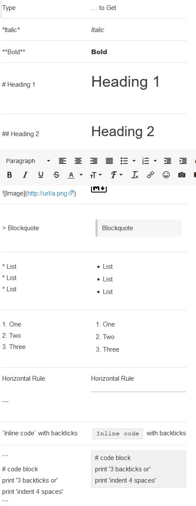
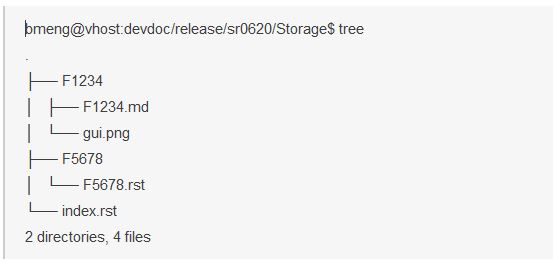
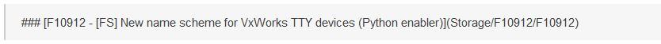
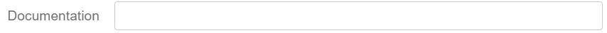

Doc as Code Guideline¶
Purpose¶
The purpose is:
to have a consistent way to write readme document for manual test case, new feature and release what’s new.
to treat document as code to achieve continuous delivery.
This document provide guidance on how to use Markdown to write these readme files. The generated documentation web site “http://pek-vx-doc.wrs.com/” will be updated through nightly build.
General Guideline¶
Follow CommonMark specification: A strongly defined, highly compatible specification of Markdown. More specifically, we should use the following Markdown type:

Try your best to avoid binary files such as picture, excel, docx, etc. Create ASCII diagrams just like those in the IETF RFCs and Linux kernel documentation.
If CommonMark specification could not meet your needs, you could use rst format which is specified by reStructuredText User Documentation
Stash of document codes: http://stash.wrs.com/projects/VX7/repos/devdoc/browse
New feature document review¶
All the new feature documents changes in devdoc or vxworks repository should follow the code review process with Information Development team as reviewer.
Include Shoba Tumma (Shoba.Tumma@windriver.com) for any reviews of code that generates customer facing text in vxworks repository. Public API markup, BSP readme.md, new and updated layer.vsbl and .cdf files, and general code with printf() and logMsg() string updates.
Include Bryan Douglas (Bryan.Douglas@windriver.com) on code reviews of new feature document file commits to devdoc repository.
New feature document procedure¶
Every new feature should have a dedicated subdirectory created in the ‘Doc as Code” git repo in their corresponding categories with the feature ID as the directory name
eg: a storage feature should be put into release/sr06xx/Storage directory
inside the directory, create a file named as feature ID, with .md or .rst as the file extension depending on which mark-up language you want to use
other files related to this feature that will be referenced by the feature readme file should be put under the same directory, eg: photos or snapshots that helps to describe the feature
The final directory should look like below:

Follow the feature readme template to document your feature and follow the code review process to submit the readme file to Stash.
Link the feature readme file in the “What’s New” document. A markdown example below:

As shown, it follows the markdown []() language to create the link. Note inside the (), the relative path to the feature readme file should be used without the file extension (md or rst) 4. New feature document template can be found on stash: http://stash.wrs.com/projects/VX7/repos/devdoc/browse/release/template

Add the link of feature readme file to the JIRA EPIC “Documentation” field
Innovation feature document procedure¶
There is dedicated directory in “Doc as Code” git repo for documents of innovation features: innovation/.
When innovation features are productized, documents will be moved from innovation directory to new feature directory.
Innovation feature document (readme) template is same as new feature one.
What’s New document procedure¶
Every new release should have a whatsnew.md file to describe the release highlights summary, list of summaries for all the new features and innovation/unsupported new features.
What’s New document will be updated incrementally Sprint by Sprint with new functions implemented. This document can be used to introduce the new features for sprint delivery and as the input for InfoDev team for official release notes at the end of release.
SR0620 example what’s new file is http://stash.wrs.com/projects/VX7/repos/devdoc/browse/release/sr0620/whatsnew.md
For every sprint release delivery, a git tag will be applied to keep a history of the readme files.
Test summary document¶
Test summary documents will be delivered for each Sprint and each release.
Manual test case document procedure
Every manual test case should have a readme.md file to describe what the test case is testing.
The readme.md file naming convention is “test_case_name.readme.md”. It is in the same directory of test_case.conf metadata ini file. “test_case_name” is the real test case name, test suite name or simply “test_case” for automatic generated readme.md file.
Test case Markdown readme.md file example: http://git.wrs.com/cgit/projects/wassp-repos/testcases/vxworks7/plain/networking/tmRtAfPktSock/RT_AF_PACKET_DGRAM.readme…
A test case readme.md file should include the following sections:
Test case name using # Heading 1 : For example, IPV6-1.1
Test case description using ## Heading 2 : For example, An IPv6 host must respond to all ICMPv6 Echo Requests sent to it, by sending an ICMPv6 Echo Reply back to the sender of ICMPv6 Echo Request.
Test steps with inputs and expected results using ### Heading 3: For example,
ANVL: Send an ICMPv6 Echo Request to <DIface-0>, containing:
source address set to address of host-1
destination address set to address of DUT
ANVL: Listen (for upto <ListenTime> seconds) on <AIface-0>
DUT: Send ICMPv6 Echo Reply to <AIface-0>
ANVL: Verify that Identification Number, Sequence Number and Data of the received ICMPv6 Echo Reply are the same as those of the ICMPv6 Echo Request sent
Step by step procedure to build your local web site¶
sudo apt install virtualenv
virtualenv –version
which python3
virtualenv -p /usr/bin/python3 sphinx_env
source sphinx_env/bin/activate
python -V
cd devdoc
pip install -r requirements.txt
make html
# Please ignore the following steps if you do not want to build test cases in wassp git repos
cd testcase
git clone git://git.wrs.com/git/projects/wassp-repos/testcases/vxworks7
git clone git://git.wrs.com/git/projects/wassp-repos/testcases/wb4
cd ..
make clean
make html
Tools reference links¶
Markdown Reader for Chrome: https://chrome.google.com/webstore/detail/markdown-reader/gpoigdifkoadgajcincpilkjmejcaanc
Markdown Viewer Webext for Firefox: https://addons.mozilla.org/en-US/firefox/addon/markdown-viewer-webext
Online Markdown editor: https://dillinger.io/
Grip – GitHub Readme Instant Preview: https://github.com/joeyespo/grip
Online ASCII diagram editor: ASCIIFlow Infinity
Change Log¶
Date |
Change Request ID |
Version |
Change By |
Description |
05/21/2020 |
N/A |
0.1 |
Shree Vidya Jayaraman |
Initial Draft |